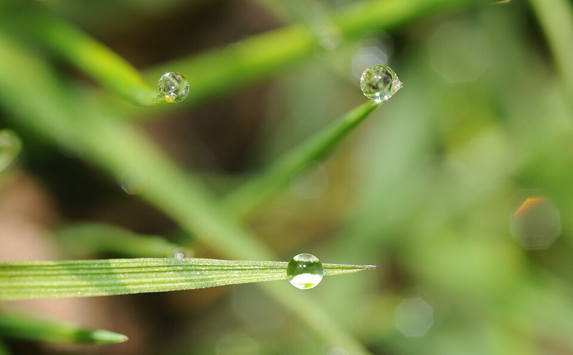

La nube sobre Aragón
El crecimiento del número de centros de datos aviva temores de graves consecuencias medioambientales en la Comunidad Autónoma
Leer más
“Hay veces que los ecologistas tenemos que debatir entre medio ambiente o economía; en este caso va a ser perjudicial para los dos”
Leer más
La Siria post-al-Assad
Más de un año después de la caída del regimen de Bashar al-Ásad, el nuevo gobierno de Ahmed al-Charaa sigue enfrentandose a numerosas dificultades en la reconstrucción del país
Leer más